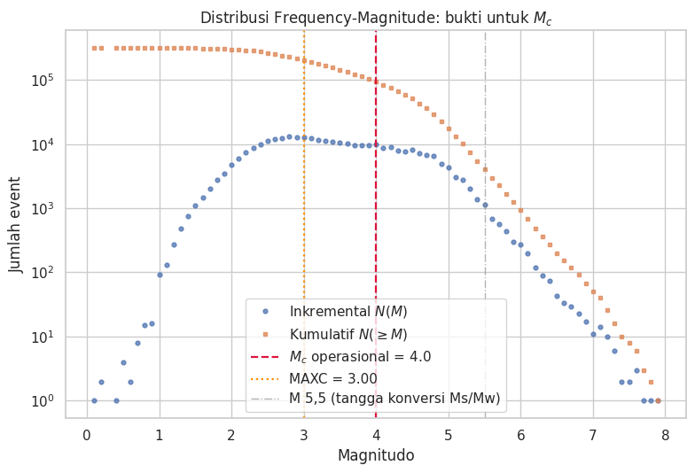
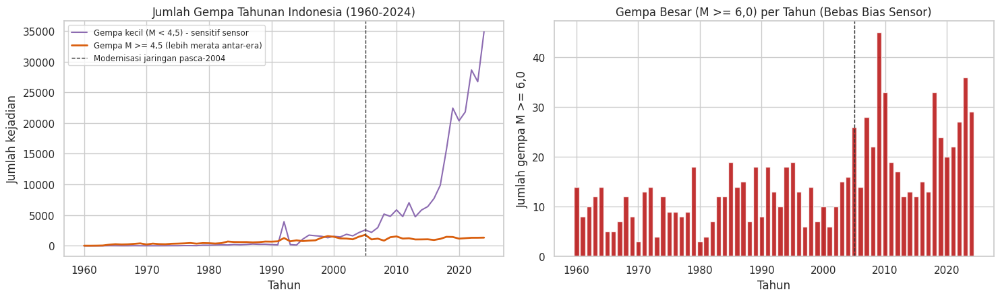

Gempa dianalisis
314.023
Catatan bersih dari 322.961 kejadian
Proyek Big Data Kelompok 8 · Analisis Seismisitas Indonesia
Analisis pola frekuensi–magnitudo berbasis Big Data, 1960–2024
Kenali wilayah prioritas mitigasi berdasarkan catatan gempa Indonesia.
Gempa dianalisis
314.023
Catatan bersih dari 322.961 kejadian
Periode katalog
1960–2024
65 tahun catatan kegempaan
Sel H3 aktif
7.017
Petak ~253 km² · minimal 10 catatan gempa
Unit analisis berupa petak H3 seluas sekitar 253 km² dengan minimal 10 catatan gempa. Mc operasional 4,0 dan b-value nasional 0,7014. Skor 0–100 menunjukkan peringkat relatif dalam model, bukan persentase peluang gempa atau korban.
Pilih analisis untuk melihat wilayah prioritas.
Maluku Utara
17 dari 20 petak dengan skor bahaya tertinggi.
SHI menggabungkan jumlah gempa, proporsi gempa dangkal, nilai b, dan magnitudo maksimum. Mayoritas petak teratas berada di laut.
Banten & Jawa Barat
Prioritas lain mencakup Bali dan DI Yogyakarta.
SREI menggabungkan bahaya dan paparan penduduk. Skor menggunakan kepadatan penduduk provinsi serta bobot lokasi. Model belum menghitung korban atau kerentanan bangunan.
74 petak laut
Teratas di Aceh, Bengkulu, dan Sumatera Barat.
Sel laut disaring berdasarkan proporsi gempa dangkal ≥ 50% dan riwayat M ≥ 6,5 setelah koreksi magnitudo rujukan. Skor belum menghitung tinggi gelombang atau jangkauan genangan.
1.205 petak
Lokasi untuk pemeriksaan seismik lebih lanjut.
Kriteria proyek memakai b terukur < 0,75, riwayat M ≥ 5,5, dan tanpa catatan M ≥ 6,0 selama 2005–2024. Konfirmasi akumulasi tegangan memerlukan data tambahan.
Cari provinsi, lalu pilih lapisan analisis.
Pilih analisis. Klik baris untuk melihat lokasinya di peta.
| No | Provinsi & Lokasi | Kepadatan Warga | Jumlah Gempa | Porsi Dangkal | Gempa Terbesar | Skor Alam | Skor Risiko | Faktor Pemicu Utama |
|---|
Klik salah satu baris untuk menyorot posisinya pada Peta Provinsi.
Pola magnitudo
Jumlah gempa pada tiap interval magnitudo dan jumlah kumulatif N(≥M), dengan sumbu frekuensi logaritmik.
Indonesia

Pola pencatatan
Tren jumlah kejadian tahunan untuk M < 4,5, M ≥ 4,5, dan M ≥ 6,0.
Indonesia

Panduan awal bagi perencanaan mitigasi dan kajian lanjutan.
Gunakan prioritas penduduk dan kandidat tsunami untuk menyaring lokasi edukasi, latihan evakuasi, serta kajian penempatan logistik. Penetapan jalur dan sirene memerlukan peta evakuasi serta kajian tsunami setempat.
Bandingkan petak daratan yang aktif dengan wilayah padat penduduk sebagai masukan evaluasi tata ruang dan bangunan. Keputusan PBG serta desain struktur membutuhkan standar dan kajian teknis yang berlaku.
Telusuri kandidat seismic gap untuk menilai kebutuhan pengamatan tambahan. Gunakan grafik magnitudo dan uji sensitivitas untuk memeriksa kelengkapan serta perbedaan skala katalog.
Pakai grid sekitar 253 km² untuk penyaringan awal area yang perlu dikaji. Penilaian tapak rumah sakit, pembangkit, jalan tol, atau kerugian properti membutuhkan kondisi tanah, aset, serta kerentanan bangunan.
Pengelompokan berbasis jarak seperti K-Means menghasilkan gugus berbentuk bulat, padahal jalur patahan Indonesia membentang memanjang dan melengkung. Pembagian grid heksagon seragam menghindari distorsi bentuk tersebut dalam 4 tahap.
Menyaring 322.961 catatan historis menjadi 314.023 gempa era alat pengukur modern.
Setiap gempa dipetakan ke heksagon Uber H3 (~253 km²) yang dipisahkan mana darat (39,3%) dan mana laut (60,7%).
Menilai setiap petak pada skala 0 s.d. 100 dari frekuensi gempa, rasio kedalaman dangkal, tegangan kerak, dan magnitudo maksimum.
Menggabungkan kepadatan penduduk BPS, menyaring 58,3% gempa susulan, dan mengkalibrasi magnitudo gempa raksasa.
Dari 314.017 gempa valid waktu, 41,7% adalah gempa utama dan 58,3% gempa susulan. Pemisahan gempa susulan menggeser 10 dari 20 petak pada daftar Top-20.
Catatan gempa kecil (M < 4,5) naik hingga ~35.000/tahun karena perluasan jaringan sensor modern. Pada ambang M ≥ 4,5, kenaikan laju tahunan pasca-2005 tertinggi tercatat di Sumatera Barat (8,86x), Sumatera Utara (6,70x), dan Aceh (4,71x).
Posisi enam gempa besar di Indonesia diuji untuk memastikan skor petak pada model selaras dengan catatan sejarah.
| Kejadian Gempa | Magnitudo Literatur | Skor di Katalog | Catatan Skala Data | Skor Petak | Kesesuaian pada Peta |
|---|
Lima eksperimen dilakukan untuk memastikan peringkat kerawanan tetap stabil meskipun parameter batas, data kedalaman default, skala magnitudo, maupun gempa susulan diubah.
| Pengujian | Variasi yang Diuji | Kestabilan Top-20 | Kesimpulan Utama |
|---|---|---|---|
| Uji A: Ambang Minimum Gempa | N_min = 5, 10, 20 gempa per petak |
20 / 20 bertahan | N_min = 10 menjaga keseimbangan terbaik antara cakupan 7.017 petak dan nilai b terukur (76,1%). |
| Uji B: Hapus Kedalaman Default | Membuang 94.957 gempa di 10 km & 35 km (30,24%) |
20 / 20 bertahan | Seluruh 20 petak teratas tetap identik; skor SHI hanya bergeser tipis (-0,003 s.d. -0,010). |
| Uji C: Skala & Kalibrasi Magnitudo | Konversi Scordilis (2006) & kalibrasi 7 gempa GCMT | 18 / 20 bertahan | Korelasi peringkat Spearman ρ = 0,9779; kalibrasi gempa raksasa memperjelas 74 petak potensi tsunami. |
| Uji D: Resolusi Ukuran Heksagon | Resolusi 4 (1.770 km²), Res 5 (253 km²), Res 6 (36 km²) | Konsisten di Laut Maluku | Res 6 terlalu kecil (nilai b terukur anjlok ke 31,3%); Res 5 memberi detail regional yang stabil. |
| Uji E: Pemisahan Gempa Susulan | Declustering Gardner-Knopoff (41,7% induk vs 58,3% susulan) | 10 / 20 bertahan (ρ = 0,87) | Separuh peringkat frekuensi dipengaruhi ekor gempa susulan; terdeteksi 1.205 petak kandidat Seismic Gap. |
Indeks ini mengukur tingkat kerawanan wilayah berdasarkan data historis 1960 s.d. 2024, dan tidak memprediksi tanggal atau jam kejadian gempa berikutnya.
Sebanyak 30,24% gempa memiliki nilai kedalaman tetap 10 km atau 35 km saat stasiun gagal melakukan inversi kedalaman. Uji sensitivitas dengan mengeluarkan data ini mempertahankan seluruh 20 sel teratas.
Skala gelombang badan mengalami saturasi pada gempa raksasa (Aceh 2004 Mw 9,1 tercatat M 7,1). Pada analisis potensi tsunami, tujuh gempa utama telah dikalibrasi dengan rujukan global GCMT/USGS.
Gempa Aceh 2004 merobek segmen sepanjang ~1.300 km sehingga ribuan gempa susulannya tersebar ke puluhan petak H3 (~17 km), tidak terkumpul di satu titik episentrum awal.